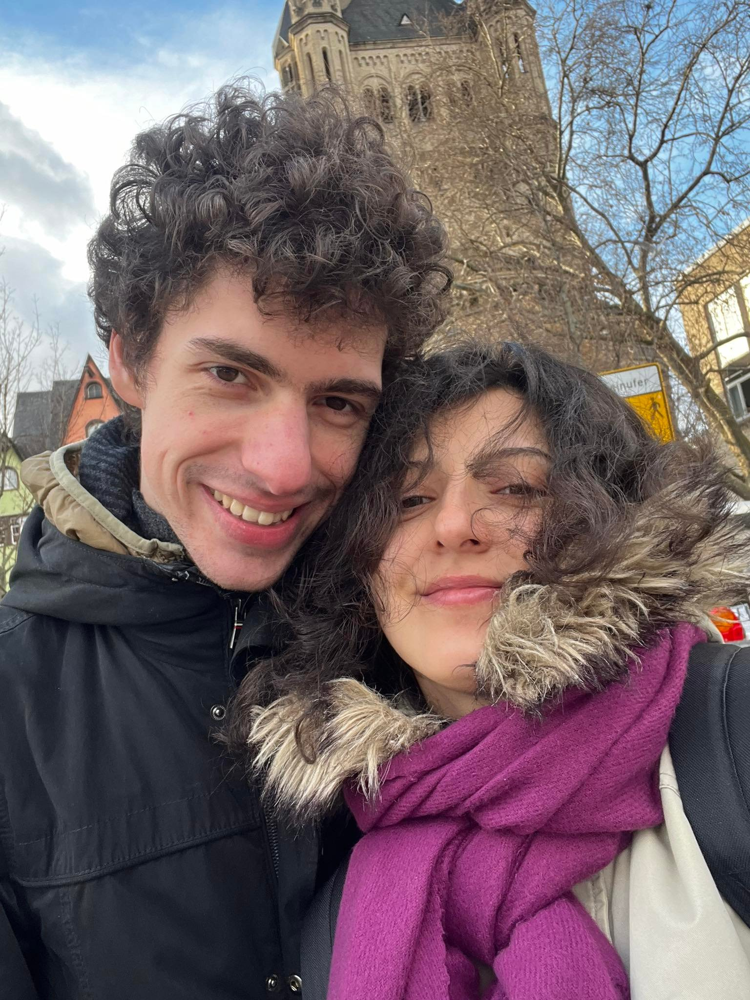

About me
Interests
Skills
Background
Scripts
Mikhail A. Kunin

Languages:
C1(IELTS.A 7.0)
Russian: Native
B1-B2
A2
Georgian: A1
Programming:
Professional ML, AI
Python (University exp)
Research Interest:
Radiation Biology
Metabolomics
Data analysis & Machine Learning
Free coding :-)